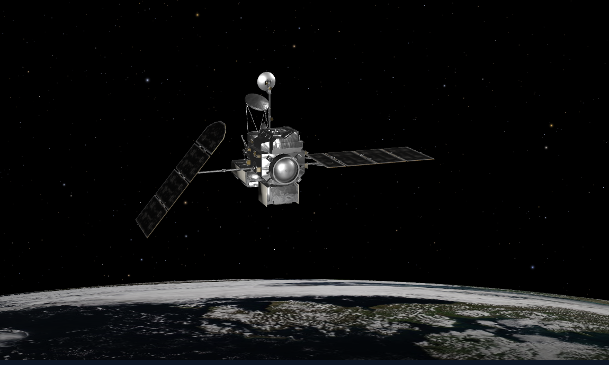

Satellite 1 - Earth Observation
🌊 PACE Satellite Overview
🚀 Mission Basics
- Full Name: Plankton, Aerosol, Cloud, ocean Ecosystem (PACE)
- Launched: February 8, 2024 by NASA
- Launch Vehicle: SpaceX Falcon 9 from Cape Canaveral
- Orbit Type: Sun-synchronous, geocentric (~676.5 km altitude)
- Coverage: Global every 2 days
🎯 Mission Objectives
- Monitor global ocean color and phytoplankton diversity
- Measure aerosols and clouds for climate and air quality studies
- Advance understanding of the carbon cycle and ocean-atmosphere interactions
- Support environmental, health, and economic applications
🔍 Key Features
- Instruments:
- OCI: Ocean Color Instrument (UV to SWIR spectrometer)
- HARP2: Hyper-Angular Rainbow Polarimeter
- SPEXone: Spectro-Polarimeter for Planetary Exploration
- Spatial Resolution: ~1 km (OCI), multi-angle for polarimeters
- Data Products: Ocean color, aerosol properties, cloud microphysics
- Data Availability: Free via NASA Earthdata and PACE portal
📊 Scientific Impact
- Improves models of climate, weather, and ocean health
- Tracks harmful algal blooms and marine heatwaves
- Supports fisheries, coastal management, and air quality monitoring
🔮 Future Prospects
- PACE data will extend NASA’s Earth observation records
- Enables new research in ocean ecology and atmospheric science
- Potential follow-on missions to deepen global monitoring